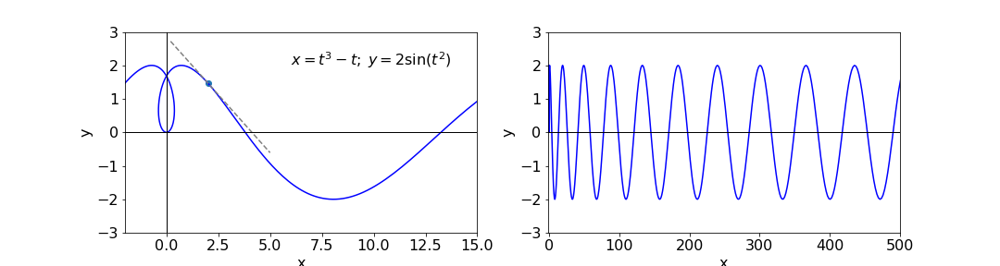
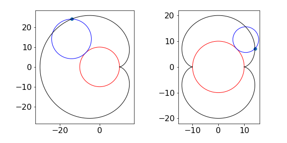
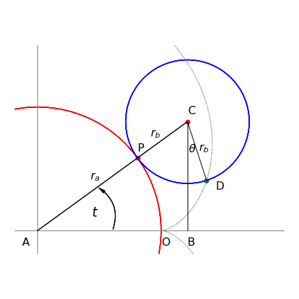

4 Product rule and function of function or chain rule.
Contents
4 Product rule and function of function or chain rule.#
# import all python add-ons etc that will be needed later on
%matplotlib inline
import numpy as np
import matplotlib.pyplot as plt
from sympy import *
from scipy.optimize import fsolve # use this for numerical solution
init_printing() # allows printing of SymPy results in typeset maths format
plt.rcParams.update({'font.size': 14}) # set font size for plots
Many equations have the form where a power of \(x\) is multiplied by another, or by an exponential, a sine or cosine and so forth, and you must be able to handle these more complicated equations because they occur so frequently. A couple of simple rules allow us to do this quite easily.
These are the product rule, which is used when there is a function that is a product or ratio of other functions e.g. \(y = \sin(x)\cos(x)\), and the function-of-function rule or chain rule used when a function has a structure such that one function is inside another, e.g. \(\displaystyle y = \sin(ax^2 + x^{-3})\) or \(\displaystyle f(x) = e^{x^2+\sin(x)}\) or in general \(f\big(g(h)\big)\) for any variable \(h\).
4.1 Function-of-a-function or Chain rule#
The method when one function is a function of another is to
\(\qquad\qquad\) differentiate the main or ‘outside function’,
\(\qquad\qquad\) then multiply this by the differential of the inside function.
This simple but powerful method is most easily explained by examples; (i) to (iv) below are typical. The general formula is given in the next section. To differentiate the functions, use the table or various sections above to remind you of the rules.
\(\quad\) (a) \(\displaystyle y=\sin(ax^2+x^{-3}),\qquad\qquad \;\;\) (b) \(\displaystyle y=e^{ax^2+\sin(ax)}\)
\(\quad\) (c) \(\displaystyle p=\ln(e^{aq})\) and find \(dp/dq,\qquad\) (d) \(\displaystyle y^n=\sin(ax^3)\)
(a) To differentiate \(\displaystyle y=\sin(ax^2+x^{-3})\) treat the sine as the outside function, differentiate it to produce \(\cos(\cdots)\), then multiply by the differential of the terms inside the sine bracket
differentiating the outside first, then the inside
(b) \(\displaystyle y = e^{ax^2+\sin(x)}\), treat the power of the exponential as the inside function and differentiate the exponential and then multiply by the differential of the inside function to give
(c) \(\displaystyle p = \ln(e^{aq} + q^3)\), the exponential and \(q^3\) are the inside functions then using the function of function rule produces
which can be checked using the result for logs.
(d) In this example \(\displaystyle y^n = \sin(ax^3)\) and the equation can be differentiated either as written, or the \(n\)th root taken first. Taking the equation as written, because \(\displaystyle y^n\) is a function of \(x\) when it is differentiated and using the function of a function method, it produces
because \(dy/dx\) is the derivative of \(y\). The result of differentiating both sides is therefore
and \(y\) can be substituted into this result to obtain the equation in \(x\) alone.
Taking the \(n^{th}\) root first gives \(y = \left(\sin(ax^3)\right)^{1/n}\) making it a double, function-of-function differentiation. The result is
which should be the same result as was obtained by using the first method but substitution and rearranging is necessary to show this.
4.2 Function-of-a-function, general formula#
The general equation on which to use the function-of-function or chain rule is \(f[g(h)]\), which means that \(f\) is a function of a second function \(g\), with the generic variable here called \(h\); \(\sin(ax^2 + x^{-3})\) has this form with \(f\) being \(\sin(\cdots)\) and \(g(x)\) being \(ax^2 + x^{-3}\) and the generic variable \(h\) is \(x\) in this case.
Differentiation is performed by letting \(u = g(h)\) giving
and this formally expressed, is what was done in our previous examples. Notice how \(du\) is on the bottom of the derivative on the left, and on the top on the right. To differentiate the equation using the formal equation is harder than following the rule ‘differentiate the outside and then the inside’, but can be done. Suppose that \(f = (a + x^2)^3\) is to be differentiated with respect to \(x\). Letting \(x=h\) and \(u=1+x^2\) gives \(du/dx=2x\) and as \(f=u^3\),then \(df/du = 3(u)^2\) and the result is \(df/du = 6x(1 + x^2)^2\).
In thermodynamics, derivatives often seem to appear out of nowhere. For instance,
and these are examples of the chain rule used in a way that you may feel is back to front. The left-hand side is expanded to give the right, rather than starting with an explicit function, of say, \(S\) in terms of \(T\) and \(p\). The functional form does exist but it is not needed for us to be able to write down the expression; the fact that it exists is enough for further calculations. The reason for using this approach is that the change of entropy \(S\) with pressure can be converted into a measurement of entropy with temperature, and a measurement of the change of temperature with pressure. The entropy change with temperature can be accurately measured with an electrochemical cell.
4.3 The Product Rule#
When there are products or ratios of functions, differentiation is done in two steps;
\(\qquad\) First, differentiate one function leaving the other alone,
\(\qquad\) then add to this the result of differentiating the second, leaving the first alone.
An example should make this clear. To differentiate \(\displaystyle y = (x^2 + a)(x^3 + x)\) let the first function be \((x^2 + a)\) and differentiate this to \(2x\) and multiply by the second function \((x^3 + x)\), then do this the other way round and add the two terms together.
As a check, expand the brackets to \(\displaystyle y = x^5 + (1 + a)x^3 + ax\) and then differentiate giving \(\displaystyle \frac{dy}{dx} = 5x^4 + 3(1 + a)x^2 + a\), which is the same as the first result. This can be seen by expanding all the brackets in both results.
4.4 General formula#
The general form of the product rule is:
where \(f'\) is the derivative \(df/dx\) and the functions \(f\) and \(g\) are actually functions of variable \(x\) and should more properly be written as \(f(x)\) and \(g(x)\). The formula can be understood by defining \(y = fg\) and in full notation, this is written as \(y(x) = f(x)g(x)\). First, taking logs gives
then differentiating gives
and multiplying out gives equation 18.
Naturally the second derivative can be obtained by repeating the process:
An example using the function of function and the product rule is to find \(\displaystyle \frac{d^2}{dx^2} e^{f(x)}\), where \(f\) is a function of \(x\). We can write the differentiation as \(\displaystyle \frac{d}{dx}\frac{d }{dx}e^{f}\) using \(f\) instead of \(f(x)\) for clarity,
4.5 Differentiating ratios of functions: Quotient rule.#
The product rule and function-of-function rule can be used to calculate quotients. If \(\displaystyle y = \frac{f (x)}{g(x)}\) then this can be represented as \(\displaystyle y = f (x)g(x)^{−1}\) and the derivative is,
which, if simplified, becomes
where the brackets and \(x\) are suppressed for clarity. For example using eqn. (20)
and using eqn. 21
4.6 Differentiation with respect to a function#
Sometimes in thermodynamics, but also elsewhere, equations are put in the form \(\displaystyle \frac{d}{d(1/x)}\) rather than \(\displaystyle \frac{d}{dx}\). For example, at constant pressure the Gibbs - Helmholtz equation, the derivative of the change of (Gibbs) free energy \(\Delta G\) with temperature, can be written as \(\displaystyle \frac{d(\Delta G/T)}{d(1/T)}\) rather than \(\displaystyle \frac{d\Delta G}{dT}\). The reason for doing this is largely historical and relates to a time not so long ago when computers were not readily available, and so the equation was simplified making it easier to integrate or plot by hand on graph paper.
To calculate this double reciprocal derivative we start with the Gibbs - Helmholtz equation. To obtain this we start with the basic equation \(dG = Vdp - SdT\). At constant pressure \(dp = 0\), and taking the derivative gives
But as \(G = H - TS\) we obtain the equation as is now normally written for a change in \(G\),
where \(\Delta H\) is enthalpy and \(T\) temperature. The curly \(\partial\) indicates a partial derivative, which means only that \(\Delta G\), depends on something other than \(T\) alone, which here is \(p\), but is otherwise just the same as any other derivative. The \(p\) subscript indicates constant pressure, but we will drop this now for clarity. To calculate \(d(\Delta G/T)/dT\): the function-of- function method of eqn. 20 is used knowing that \(\Delta G\) is a function of \(T\),
Next the remaining derivative is substituted in,
and so;
So far, this is what we have done several times in one form or another. The next step is to find the derivative with respect to \(1/T\). The best way to proceed is to recast the equation with substitution, for example, \(u = 1/T\) makes \(\displaystyle du = −dT/T^2\). Substituting for \(dT\) gives \(\displaystyle -\frac{1}{T^2}\frac{d}{du}\left(\frac{\Delta G}{T} \right)=-\frac{\Delta H}{T^2}\), therefore
A second commonly met equation is the van’t Hoff isotherm
which describes how the equilibrium constant of a reaction at constant pressure \(K_p\) varies with the temperature. The enthalpy \(\Delta H^\text{o}\) is not a function of pressure, and \(\Delta G^{\text{o}} =-RT\ln(K_p)\). To put the isotherm in the form \(\displaystyle \frac{d\ln(K_p)}{d(1/T)}\), the same substitution, \(u = 1/T\), can be employed, producing
Therefore, a plot of the log of the equilibrium constant vs reciprocal temperature is a horizontal line of intercept \(-\Delta H^{\text{o}}/R\). If the line is not constant, but sloping or varying, then \(\Delta H^{\text{o}}\) depends on temperature.
4.7 Implicit differentiation#
Quite often, an equation we may want to differentiate contains powers or functions of \(y\) as well as \(x\). For example, \(\displaystyle \sin(y) + x^2e^x = 1\), and cannot easily be put into the form \(y = \cdots\). In this case implicit differentiation is necessary, which is just a grand sounding name for a rather simple procedure and one with which you are already familiar. All that is done is to differentiate any function of \(y\) using the function-of-function or product rule or both, as appropriate, and remembering that the differential of \(y\) is \(dy/dx\).
Differentiating \(\displaystyle \sin(y) + x^2e^x = 1\) with respect to \(x\) produces
To test how well you understand this, find \(dx/dy\) by direct calculation using \(\displaystyle\sin(y) + x^2e^x = 1\), and thus show that \(\displaystyle \frac{dy}{dx}=\left( \frac{dx}{dy} \right)^{-1}\).
An apparently hard differentiation is to find \(dy/dx\) for \(\displaystyle y^y-x^x=0\). This is however made easier if logs are taken first then differentiated implicitly. Thus differentiate \(y\ln(y)=x\ln(x)\) leading to
which can be simplified to
SymPy produces the same result after a little simplification and remembering that the function equals zero and that x^x=y^y$.
x,y = symbols('x,y')
y = Function('y') # define y to be a function
f = y(x)**y(x) - x**x # define this as a function not an equation
ans = diff(f,x) # define y as a function of x so that it will be differentiated.
simplify(ans)
4.8 Differentiating parametric functions#
Sometimes it is easier to describe equations in parametric form as two functions with a common or dummy variable, rather than in the conventional way; there is no fundamental reason for doing so, just convenience. An example is the equation of a circle. If it has a radius \(a\) and is centred at the origin,
In parametric form, this same equation becomes the pair of equations;
with \(t\) as the parametric variable. By squaring both \(x\) and \(y\) and adding, the familiar equation is formed because \(\displaystyle \sin^2(t) + \cos^2(t) = 1\).
When graphing a parametric equation both \(y\) and \(x\) are calculated with \(t\) varying. The range of \(t\) will, naturally, depend on the equations being used, but with a circle need be no more than \(0 \to 2\pi\).
The parametric equations of an ellipse are \(x = a \cos(t), y = b\sin(t)\) where \(a\) and \(b\) are constants that define the axes of the ellipse. When they are the same, a circle results. The equation of a parabola is \(\displaystyle y^2 = 4ax\); in parametric form this can be written as \(x = at^2\) and \(y = 2at\).
To differentiate the parametric form use the function-of-function approach and write
Therefore, \(dy/dx\) is always the ratio of the two derivatives with respect to \(t\), the parametric variable.
The second derivative can be written, using \(y' = dy/dt\) and \(x' = dx/dt\) for clarity, as;
evaluating the last step gives
As a check we can use SymPy.
x,y,t = symbols('x y t')
y = Function('y')
x = Function('x')
ans = diff( diff(y(t),t)/diff(x(t),t) , t) / diff(x(t),t)
simplify(ans)
Consider finding the gradient of the elegant looking curve shown in Fig. 6 at a point such as \(x\) = 2, and then find the equation of the tangent line at this point and where the tangent is horizontal and where vertical. The curve is described by the parametric equations
The gradient from equation (23) is
To reform this into an equation in \(y\) is possible, but to make an equation in \(x\) will be messy and there is no reason to do so. At our ‘victim’ point, \(x = 2\), the value of \(t\) is the solution of \(t^3 - t = 2\) which, we can use a built in fsolve function in numpy/scipy or use the Newton - Raphson method which is described in part 10 of this chapter.
f = lambda t: t**3-t-2 # define function so fsolve knows what to solve for
ans = fsolve(f,1)[0] # use [0] to get first answer only, answer is t
print('real root of equation = ',ans)
print('gradient = ', 4*ans*np.cos(ans**2)/(3*ans**2-1))
print('y0 = ', 2*np.sin(ans**2))
real root of equation = 1.5213797068045676
gradient = -0.6932343858343518
y0 = 1.4718020332688042

Figure 6. Left. The parametic curve and tangent at \(x\) = 2. Right: The same function on a larger scale showing the oscillatory nature of the curve.
There must the three solutions but only the real value, \(1.52\), is needed for the gradient which is \(-0.693\). The equation of a straight line through points (\(x_0,\; y_0\)) is \(y - y_0 = m(x - x_0)\), which using the gradient just found and the initial coordinates is \(y - 1.47 = -0.693(x - 2)\); this line is also shown on the sketch. The value for \(y_0\) is found from \(\displaystyle = 2 \sin(t^2)\).
The horizontal and vertical tangents can be obtained from the individual derivatives when \(dy/dt = 0\) and \(dx/dt = 0\) respectively; (see also Section 9 for maxima and minima). The horizontal tangent is \(dy/dt = 4t \cos(t^2) = 0\) where \(t = 0\), or \(\pm\sqrt{n\pi /2}\) where \(n\) is a integer constant with values \(1, 3, 5 \cdots\). The integers \(n\) appear because the function is oscillatory along the x-axis and cosines are zero at multiples of \(\pi /2\). The values are
and so forth for other tangents. The vertical tangent occurs at \(dx/dt = 3t^2 - 1 = 0\) or \(t = 1/\sqrt{3}\), with \(x = \pm 0.385\) and \(y = 0.654\), which are either side of the central loop in the curve.
(i) Calculating the Parametric Equation#
As an example consider finding the parametric equations of an epicycloid. This is the curve formed when one disc rotates about another, such as two coins. In the (false) models of the solar system, such as proposed by Ptolemy, epicycloids were used to describe the motion of the planets. Initially these worked quite well but as time passes such models, based as they were on incorrect physics, became increasingly inaccurate. If the epicycloid curve produced has one cusp it is called a cardioid due to its heart-like shape, those with two cusps are called nephroids after the shape of a kidney. Figure 6a shows two epicycloids, the number of cusps corresponds to the ratio of radii.

Figure 6a. Epicycloids. Left The cardioid is the black curve (radio of radii is 1) and right Nephroid (black ) with ratio 2.
Assuming that the fixed circle is centred at the origin of the coordinates (fig. 6b), the parameter \(t\) used in the parametric equations is the angle from the x-axis to the centre of the rolling circle as shown in figure 6b. The aim is to represent the point D in terms of the angle \(t\) and the radii of the two circles \(r_a\;r_b\).
We start by writing down the lengths AB and BC which are \(x_{AB}=(r_a+r_B)\cos(t)\) and \(y_{BC}=(r_a+r_B)\sin(t)\). This leaves the horizontal distance from D to B to be found, and the similar vertical distance D to C. This means finding the angle DCB (\(\theta\)). We know that the angle ACB is \(\pi/2 - t\) because ABC is a right angled triangle. To find the other angle we realise that the distance \(L\) from the contact point P of the two circles to point O and to point D is the same, since one curve rolls over the other. The angle \(t\) is equal to the same fraction of the circle as distance O to P (\(L\)) is to the circumference; similarly angle ACD to length PD which is also \(L\). Thus \(\displaystyle \frac{t}{2\pi}= \frac{L}{2\pi r_a}\) and for the angle ACD \(\displaystyle \frac{\pi/2-t+\theta}{2\pi}=\frac{L}{2\pi r_b}\). Equating the two lengths \(L\) and a little rearranging gives \(\displaystyle \theta= \left(\frac{r_a+r_b}{r_b} \right)t+\frac{\pi}{2}\). The extra \(x\) length is then \(\displaystyle-r_b\cos\left(\frac{r_a+r_b}{r_b} t\right)\) and the parametric equations are
Finally, if there are two similar coins and if one rotates (without slipping) half way round the other what direction will it now point compared to that initially? The answer is that it will point in the same direction as that when it started. The distance travelled is \(\pi r_a\) which is a rotation by 180o but there is also the rotation added by the fixed coin making \(360^\text{o}\) in total.

Figure 6b. Calculation of parametric equation for an epicycle.
4.9 Differentiating vectors#
To differentiate any vector, each of its elements is treated separately. In the previous section, we saw how to represent a curve in parametric form. The two parametric equations can also be represented in vector form; for example, a parabola is represented by the equation \(y^2 = 4ax\), but in parametric form this can be written as \(\displaystyle x = at^2\) and \(y = 2at\) and in row vector form as \(\displaystyle t = [x y] \equiv [at^2 2at]\). Since all elements are treated separately,
Evaluating each term produces \(\displaystyle \frac{dv}{dt} = [2at, 2a]\). The second derivative is \(\displaystyle \frac{d^2v}{dt^2} = [2a, 0]\). Previously, equation (23), it was shown that the gradient was the ratio of the derivative of \(y(t)\) over that of \(x(t)\). Applying this produces \(\displaystyle \frac{dy}{dx}=\frac{2a}{2at}=\frac{1}{t}\) so that the gradient is \(\sqrt{a/x}\) which is the same as starting with \(\displaystyle y^2=4ax\).
4.10 Differentiating dot and cross products#
When differentiating dot and cross products, the normal differentiation and the normal vector rules apply. Suppose \(\boldsymbol u\) and \(\boldsymbol v\) are vectors in some variable \(s\) then, as \(\boldsymbol u\cdot \boldsymbol v\) is the dot product
Similarly for the cross product
Differentiating vectors is described in more detail in Section 13.
5 Differentiation summary#
Notation \(f'=d/dx,\; f(x),\; g(x) \) are general functions in \(x\) such as \(x^2\) or \(\sin(x)e^x\) etc. but mostly written as \(f\) and \(g\) for clarity. Constants used are \(a\) and \(b\).
(i) Exponentials#
(ii) Logarithms#
(iii) Function of a Function or Chain Rule#
(iv) Product Rule#
\(\qquad\)or explicitly
(v) Function of powers of \(x\)#
(vi) Reciprocal Derivatives#
(vii) Changing Variables#
\(\qquad\)If a function is expressed as \(f(x)\) and you want it as \(f(t)\) then;
(viii) Parametric equations#
(ix) Integrals#
\(\qquad\)If the limits \(u\) and \(v\) are functions of \(x\) then use Leibniz’s rule
\(\qquad\)If the differentiation variable is not the integration variable